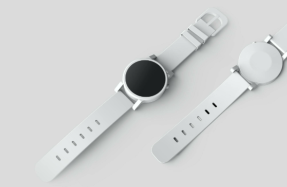

New and Improved!
Novus Watch
Series IV
The pinnacle of fashion and tech. This wearable piece is an homage to glided palaces and minimal regalia, combining nouveau-deco and brutalism influences in a compact, Swiss-made watch.
The pinnacle of fashion and tech. This wearable piece is an homage to glided palaces and minimal regalia, combining nouveau-deco and brutalism influences in a compact, Swiss-made watch.